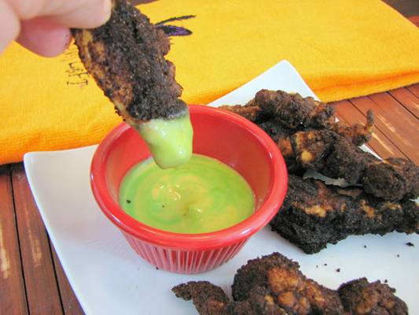

Burned Monster Meat with Goblin Goo

Discription
Delectiable Burnt Monster Meat. Something about the char gives it a blackened taste. Make sure to make the Goo as well! It adds a good sweet taste to the Monster Meat.
Ingredients
- Around 1 lb of chicken (Those monsters are scary!), tear apart into peices
- 1/2 cup all purpose flour
- 2 or 3 eggs, beat those unborn monsters
- 1 cup plain breadcrumbs
- 1/8 cup paprika
- 2 tbsp season salt
- Salt and pepper... however much you want
- Honey mustard dressing
- 3 drops of green food coloring (My favorite color)
- Vegetable oil to fry up the beastes
Directions
For Monster Meat
- Preheat oven to 300°F and heat oil to 360°F in a deep fryer, wok or pan (Oil should never be more than 1/2 way up the sides of the vessel)
- Mix paprika and season all into breadcrumbs, making sure that all ingredients are combined well
- Cut chicken into irregular pieces. None should be the same size or shape.
- Place flour, eggs and breadcrumbs in bowls. Dredge chicken in flour, then very thickly in eggs and dredge in breadcrumbs. (The heavy coating of egg is important!) Place on a parchment covered cookie sheet or flexible cutting board while the rest of the chicken is breaded.
- Fry chicken in small batches until crust is blackened and has split in several places on each piece. (That’s what the thick egg wash was for). The Paprika will blacken very quickly, so don’t walk away!) remove from oil and place on a clean parchment lined cookie sheet. Repeat process for all chicken pieces.
- Place chicken in oven for approximately 15 minutes to ensure that all pieces are cooked through. Assure that they are by checking to be sure that the largest piece is no longer translucent and any juices run clear when it is broken in half.
For Goblin Goo
- Mix 2 to 3 drops green food coloring with 1cup Honey mustard Salad Dressing. Mix well for an alien green consistency or slightly less well for a very sickly looking concoction.
- Serve to your little ghouls and watch the carnage!